RessourcesKriyas, méditations et enseignements
La bibliothèque de la FFKY : plus de 300 fiches pour nourrir votre pratique et vos cours, classées par thème et par corps yogique. Un trésor réservé aux adhérent·es.
322 fiches de pratique
Kriyas, méditations, mantras, pranayamas, relaxations : chaque fiche décrit la pratique étape par étape, pour la vivre chez vous ou la transmettre en cours.
- Kriyas190 fiches
- Méditation160 fiches
- Fondamentaux8 fiches
- Chakras8 fiches
- Pranayama4 fiches
- Mantras3 fiches
- Relaxation3 fiches
Nombre de fiches publiées sur ffky.fr (lecture du 27/11/2026).


Quelques fiches de la bibliothèque
Les titres restent visibles par toutes et tous ; le contenu s’ouvre avec votre compte adhérent·e.
- Kriyas · L’ÂmeSat Kriya – L’exercice de Kundalini Yoga par excellenceRéservé aux adhérent·es
- Kriyas · Corps PhysiqueSurya KriyaRéservé aux adhérent·es
- Kriyas · L’AuraAshtang Agni KriyaRéservé aux adhérent·es
- Fondamentaux · Corps PhysiqueSérie pour l’énergétisation de la colonne vertébraleRéservé aux adhérent·es
- Méditation · Mental NégatifMéditation pour le mental négatifRéservé aux adhérent·es
- Méditation · Mental Neutre (Cœur)Relaxation du BouddhaRéservé aux adhérent·es
Chercher par corps
Les fiches sont aussi classées selon les dix corps de l’enseignement du Kundalini Yoga.
- L’Âme (16)
- Mental Négatif (20)
- Mental Positif (9)
- Mental Neutre (Cœur) (45)
- Corps Physique (67)
- Ligne d’Arc (8)
- L’Aura (15)
- Corps Pranique (12)
- Corps Subtil (16)
- Corps Radiant (18)
Une sélection à découvrir
Une sélection de fiches en accès libre peut accueillir les curieux et curieuses avant leur adhésion.
Sélection en accès libre : à confirmer par le bureau.
Accès réservé aux adhérent·es
Connectez-vous à votre espace pour ouvrir toutes les fiches, ou adhérez dès 5 € par an pour rejoindre la bibliothèque.
Dans la maquette, le bouton mène à la page Adhérer. parcours de connexion : chantier espace adhérent